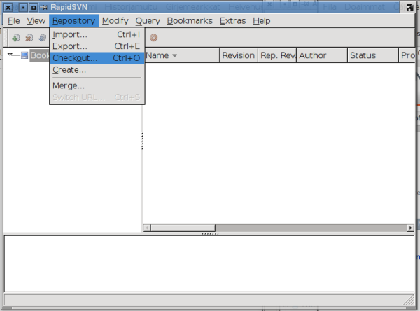
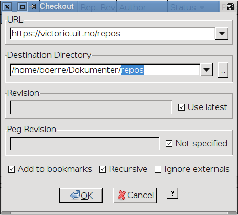
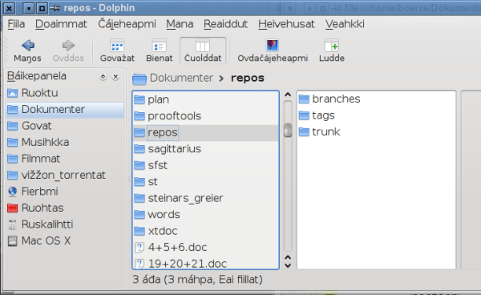

Choose Repository->Checkout...

Write https://gtsvn.uit.no/langtech/trunk into the URL box. Choose the folder where you
would like to place the files in the Destination Directory box (we suggest adding
langtech to
the end of the path, to keep svn folders in a separate place), then press OK.

Press "Permanently" when the SSL Certificate dialog appears.
In the directory that you did the checkout you will now have a directory called langtech where
all our code is contained. Usually the daily work goes on in the repos/trunk directory.
